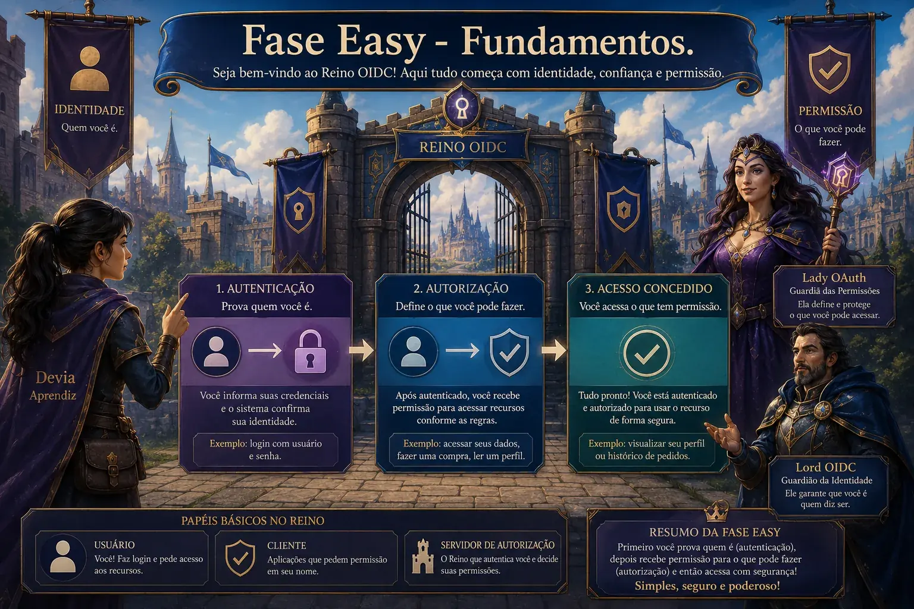
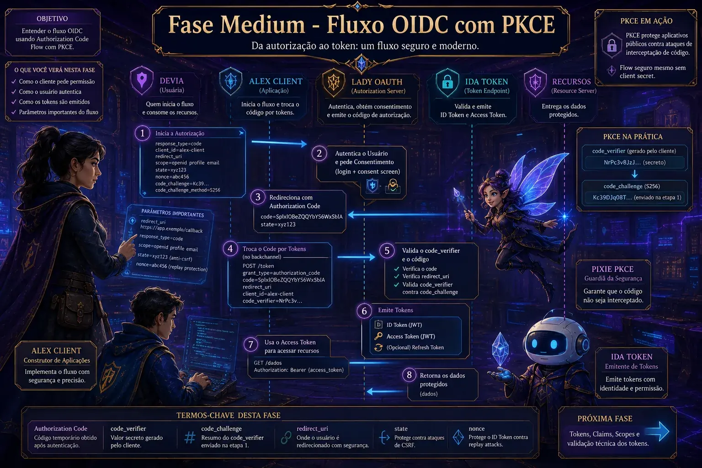
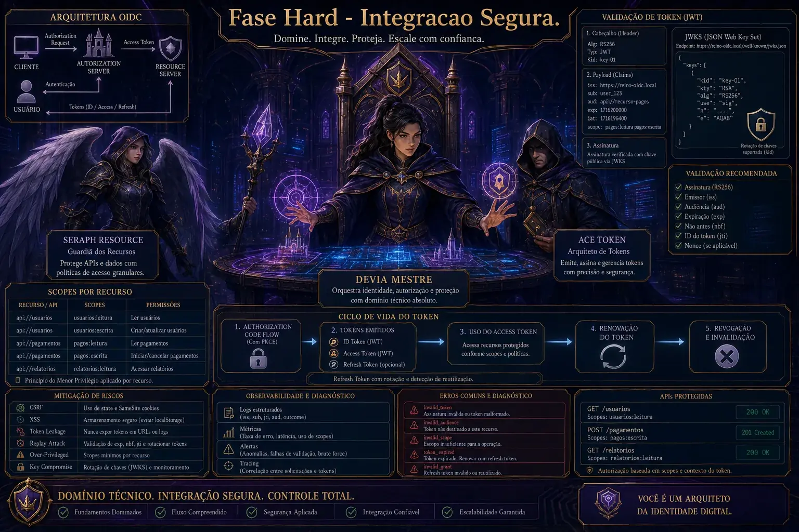

O que é o Reino OIDC?
Material educacional sobre OAuth 2.1 e OpenID Connect — você aprende identidade e login seguro na prática.
História, glossário, mapas técnicos e aplicativo Windows gratuito. As três Eras são gratuitas para estudo pessoal. A edição paga está em desenvolvimento. Quem quiser ser avisado pode escrever pelo WhatsApp, sem pagamento nesta etapa.
Página de download com checksum e notas da release.
Edição Free 2.0.2 · tag v2.0.2-free
Bem-vindo ao Reino da Identidade Federada
Imersão interativa sobre OAuth 2.1 e OpenID Connect. Edição Free 2.0.2.

Jornada imersiva local com evolução progressiva por fases e cenários OIDC. As fases Easy, Medium e Hard são trilhas de imagens. As três Eras são as partes da história.

Fase Easy
Base conceitual para entrada no protocolo.

Fase Medium
Fluxo OIDC e segurança em prática guiada.

Fase Hard
Domínio técnico aplicado em arquitetura real.
Os Personagens
Conheça os heróis e vilões desta saga.
Parte I — A Era das Senhas e a Chegada de Lady OAuth
Onde nasce o conceito de autorização.
Parte II — A Era da Confiança e o Lord OIDC
Onde a identidade ganha forma.
Parte III — A Nova Ordem Digital e a Aprendiz Devia
Onde tudo se integra em aplicações reais.
🌍 Mundo do Conhecimento
Guia técnico completo com conceitos, códigos e exemplos práticos.
🃏 Reino OIDC — Edição Super Trunfo
Dois baralhos gratuitos (9 + 5 cartas). Atributos: Fortificação (Segurança), Nobreza (Complexidade), Linhagem (Escalabilidade) e Sigilo (Privacidade).
🎓 Academia do Reino OIDC
Teste seus conhecimentos com flashcards interativos organizados em 3 caminhos de aprendizado.
📚 Glossário Ilustrado
Dicionário de termos técnicos explicados para leigos e especialistas.
📜 Mapa do Reino — Evolução
Dashboard onde as áreas acendem conforme você aprende.
🗺️ Mapas Técnicos
Diagramas de arquitetura e fluxos visuais dos protocolos OAuth 2.1 e OIDC.
Conclusão
O desfecho da nossa saga.
🏁 Conheça: Circuito Ferradura
Quer aprender lógica, ábaco romano e programação Python com uma trilha prática? Conheça o Circuito Ferradura, o curso da Cara Core para jovens entusiastas.
- Curso em HTML com 6 fases
- Lógica, ábaco romano e Python
- Acesso gratuito para pessoas físicas
- Registro de conclusão
Curso pela Cara Core Informática — acesse em circuito.caracore.com.br